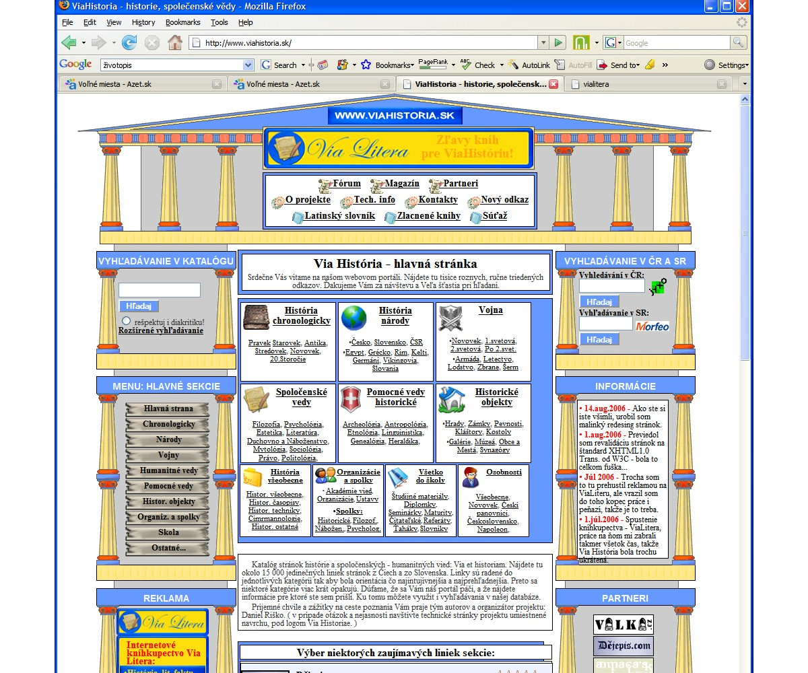
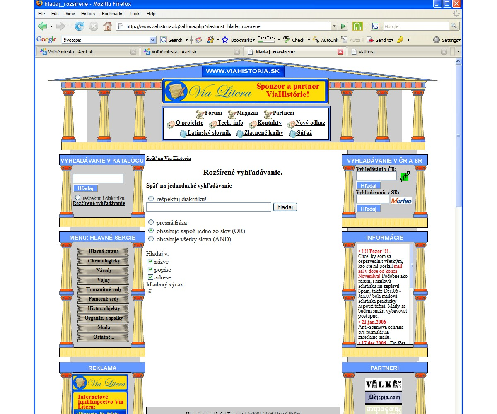
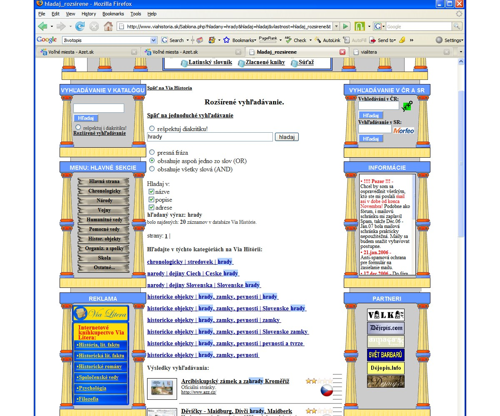
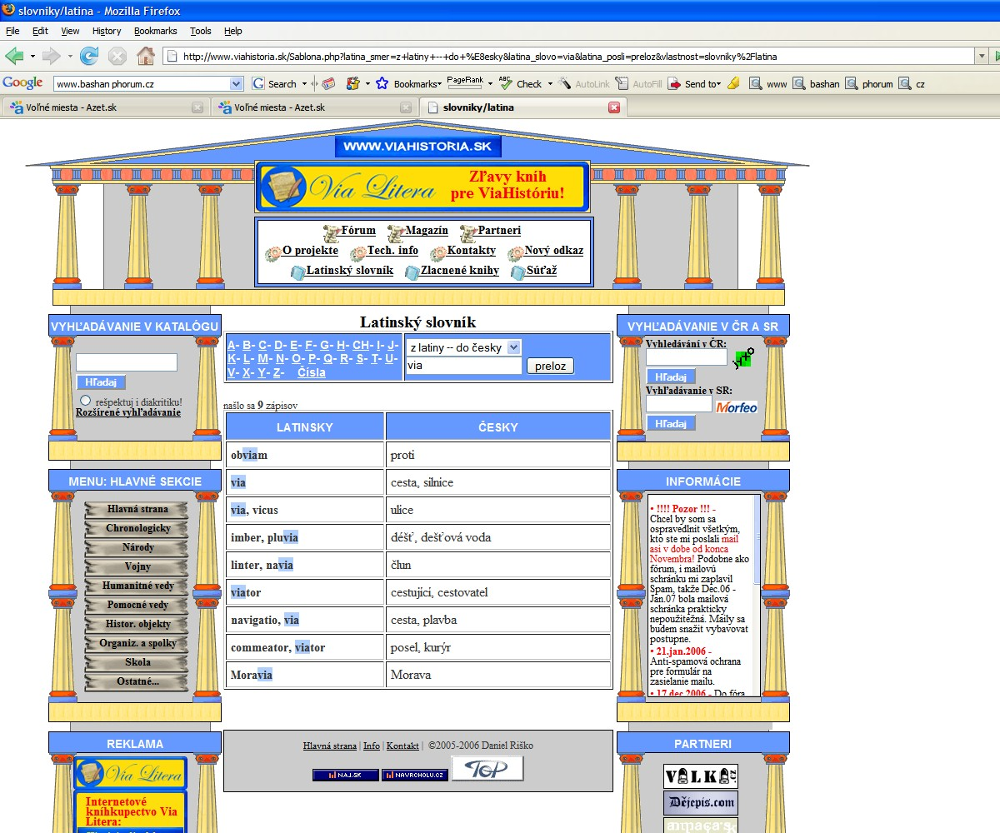
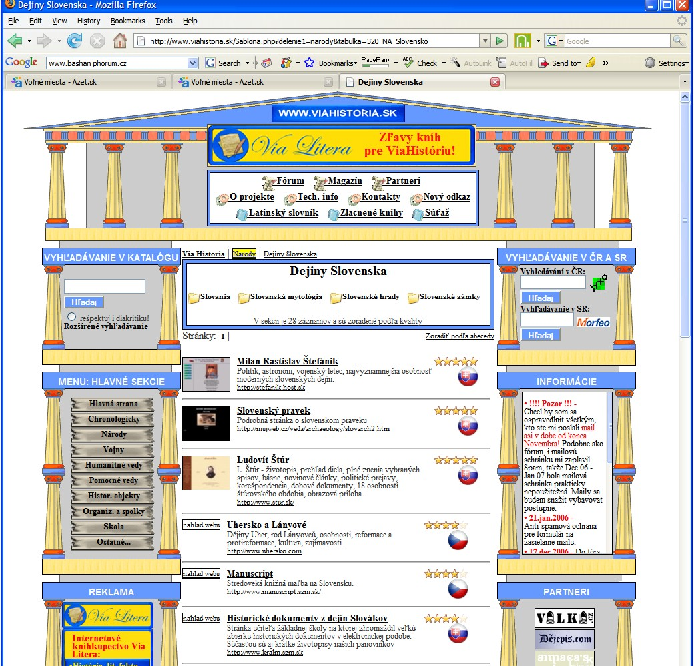

↑ o úroveò vvyššie
Prezentácia: viahistoria - u�ívate¾ská èas�
1. 
2. 
3. 
4. 
5. 
• katalóg stránok www.viahistoria.sk, v databáza obsahuje viac ako 14000 liniek na 95% i s grafickım náh¾adom webu.
• Návštevníkov tvoria najmä školáci a stredoškoláci - tomu by chcela odpoveda� i nekonvenèna "tvorivá" grafika webu.
• Po technickej stránke mô�e by� zaujímavé vlastné riešenie vyh¾adávania v katalógu
• Vlastné "rozšírené" vyh¾adávanie
• grafické náh¾ady webov vo vısledku vyh¾adávania stále ešte nie sú "be�né"
• Latinskı slovník - �a�í najmä z existencie onoho spomínaného vyh¾adávania.
• vıpis liniek...